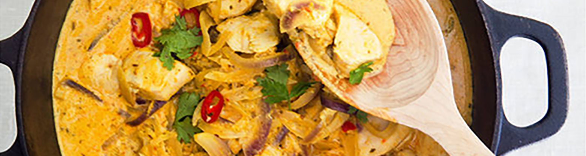

-
Ingredienser
4 portioner
1. 3 dl ris (gärna basmati)
2. 2 schalottenlökar
3. 1 vitlöksklyfta
4. ca 350 g strimlat griskött
5. 1 msk smör eller margarin
6. 1 msk curry
7. 1/2 tsk sambal oelek
8. 1 grönsaksbuljongtärning
9. 3 dl matyoghurt
-
Gör såhär
1. Koka riset enligt anvisning på förpackningen.
2. Skala och finhacka schalottenlök och vitlök
3. Bryn köttet i smör eller margarin 2–3 minuter i en gryta eller stor stekpanna. Tillsätt lök, vitlök, curry och sambal oelek. Fräs ytterligare 2 minuter.
4. Rör ner vatten, smulad buljongtärning eller fond och yoghurt. Låt sjuda ca 5 minuter. Red ev av med maizena utrört i lite vatten. Låt sjuda ytterligare 2 minuter. Smaka av med salt och peppar.
5. Servera currygrytan med riset och de olika tillbehören, gärna upplagda i separata skålar eller på ett stort fat.
